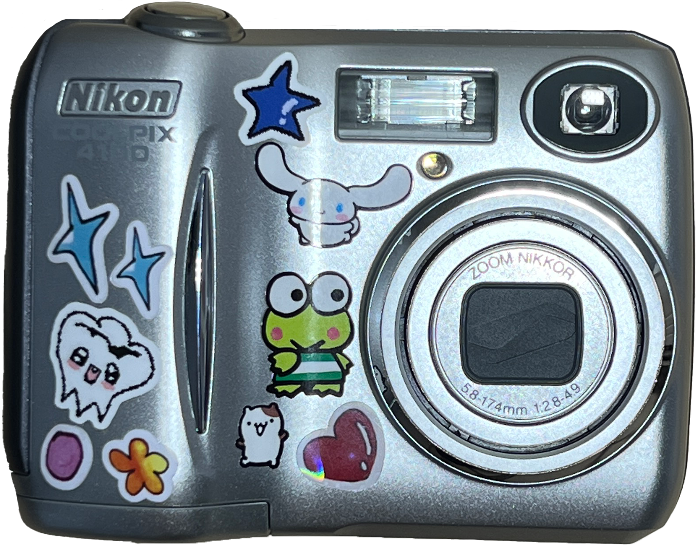
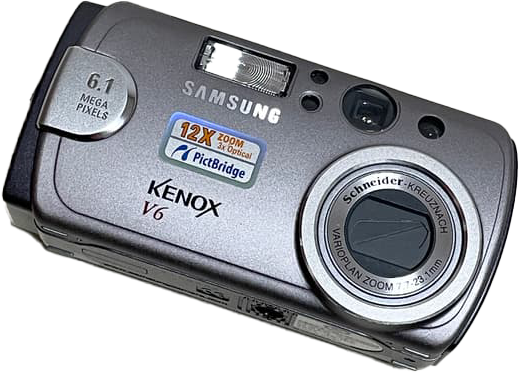

빈티지 카메라 소개빈티지 디카 기종소개 빈티지 디카를 사용하기 위한 준비물 빈티지 카메라로 찍은 사진들 사진찍으러 가기 좋은 가을 단풍 명소

니콘 쿨픽스 4100은 2004년에 출시된 콤팩트 디지털
카메라입니다. 400만화소의 CCD와 3배 광학 줌 렌즈
를 갖고 있으며, SD 메모리 카드와 14.5MB의 내장
메모리를 사용합니다.간단한 조작과 다양한 씬 모드를
제공하여 초보자도 쉽게 사진을 찍을 수 있습니다.
| 출시일 | 2004년 5월 |
| 유효 픽셀 | 400만화소 |
| 이미지 센서 | 1/2.5인치 원색 CCD(4.23메가픽셀 픽셀) |
| 이미지 크기(픽셀) | 최대크기 : 2288×1712 픽셀 |
| 렌즈 | 3배 줌 Nikkor 렌즈 |
| 전자 줌 | 최대 약 4배 |
| 초점거리 | 렌즈 전면 30cm (접사모드 시 약 4cm) |
| 배터리 | AA 알카라인 배터리 2개 |
| 크기 | 88(W)×65(H)×38(D)mm |
| 무게 | 약 140g(배터리 및 SD 메모리 카드 제외) |

V6은 2005년에 출시된 콤팩트 디지털 카메라입니다.
610만화소의 CCD와 3배 광학 줌 렌즈를 갖고 있으
며, 1.5인치 LCD와 SD 메모리 카드를 사용합니다.
다양한 씬 모드를 제공하여 초보자도 쉽게 사진을 찍을 수 있습니다.
| 출시일 | 2004년 8월 |
| 유효 픽셀 | 610만화소 |
| 이미지 센서 | 1/2.5인치 원색 CCD(4.23메가픽셀 픽셀) |
| 이미지 크기(픽셀) | 최대 크기 : 2,816 x 2,112 픽셀 |
| 렌즈 | 광학 3배 줌 |
| 전자 줌 | 최대 약 4배 |
| 초점거리 | 렌즈 전면 80cm (접사모드 시 약 6cm) |
| 배터리 | AA 알카라인 배터리 2개 |
| 크기 | 105.5(W)×54.6(H)×38(D)mm |
| 무게 | 약 140g(배터리 및 SD 메모리 카드 제외) |